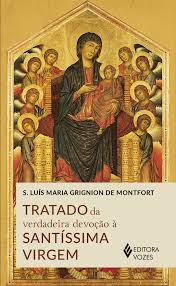
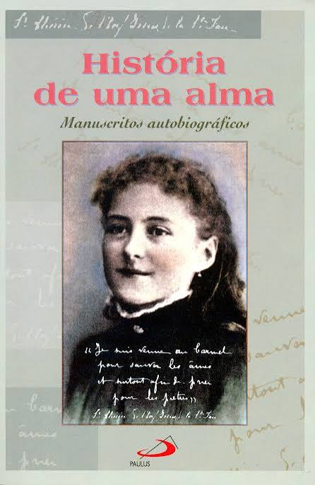

Encontre músicas, livros, perfis, lojas e conteúdos que ajudam na caminhada com Cristo.


Ministério de música católico que leva jovens a uma experiência de oração e encontro com Cristo.
Ouvir
Um lugar de peregrinação, oração e encontro com Nossa Senhora.
Conhecer
Conteúdos de formação, oração e reflexões para fortalecer a caminhada cristã.
Ouvir
Uma obra clássica de espiritualidade sobre seguir Jesus e crescer na fé.
Conhecer
Dominus illuminatio mea!✨🇻🇦
"Partilha, reflexão e muito humor por aqui."
“ᴛᴇ ᴇxᴘʟɪᴄᴏ ᴄᴏɪꜱᴀꜱ ǫᴜᴇ ᴛᴏᴅᴏ ᴄᴀᴛóʟɪᴄᴏ ᴅᴇᴠᴇʀɪᴀ ꜱᴀʙᴇʀ”
⛪️ missionário - Colo de Deus
🎤 humorista - É coisa de católico | Stand up comedy católico
Conteúdos de formação católica, história da Igreja e explicações sobre a fé de um jeito jovem e acessível.
ConhecerBanda católica que anuncia Cristo através da música e da espiritualidade mariana.
ConhecerUm dos maiores centros de peregrinação católica do mundo.
ConhecerUm lugar de oração e devoção a São José, patrono da Igreja e modelo de fé.
ConhecerConteúdos de formação, oração e reflexões para fortalecer a caminhada cristã.
Ouvir
